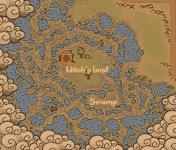
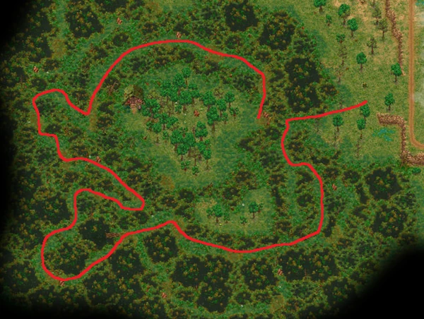

The Swamp
| The Swamp | |
|---|---|
 | |
Location information
| |
Buildable
|
False |
Exits
|
Graveyard |
Npcs
| |
| Clotho | |

The Swamp is a large area west of the river which is broken up by a large number of winding paths and impassable water. In the center of the swamp lives the witch Clotho in her hut.
Accessing
The area is reached by repairing the stone bridge west of the graveyard which allows you to cross the river.
| Icon | Materials Required | Energy | Notes |
|---|---|---|---|

|
1× Wooden plank 4× Flitch 8× Nails |
- |
Repairing the bridge
The circuitous and winding path through the swamp can be greatly simplified by repairing the swamp bridge. So take with you every material and energy required, as the trip there and back can be quite tedious.
| Icon | Materials Required | Energy | Notes |
|---|---|---|---|
| 3× Wooden plank 6× Flitch 10× Nails |
- |
The path that leads to the center of the swamp without having to trial and error to the center. Some of the iron nodes are also visible. 

Areas of Interest
Fishing
- There is a fishing spot just southwest of Clotho's hut.
- There is a fishing spot just south of the waterfall and northeast of the swamp.
Clotho's hut
Clotho lives in the hut in the center of the swamp.
Mining
You'll find a lot of iron ore scattered around the landscape. Even dead ends mostly have a small deposit at the end.
| |||||